Koupelny, schodiště, podlahy a venkovní plochy z našich zakázek. Vyberte si realizaci a zjistěte víc, nebo si prohlédněte celou galerii.
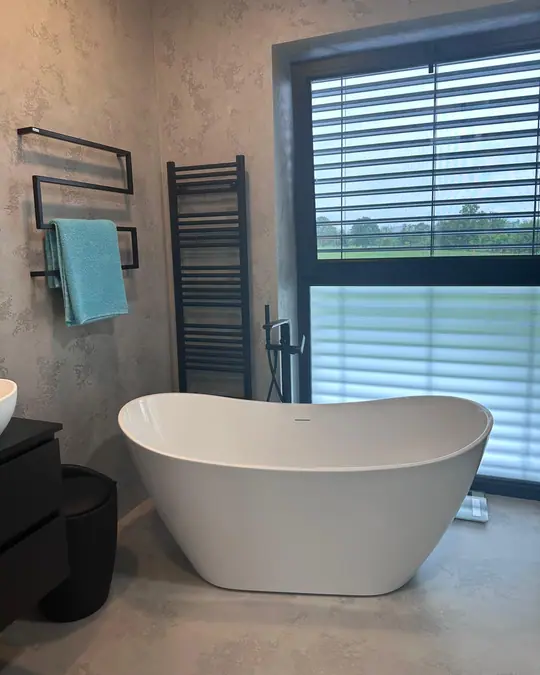
Koupelna – stěny i podlaha ze stěrky
Schodiště se skleněným zábradlím
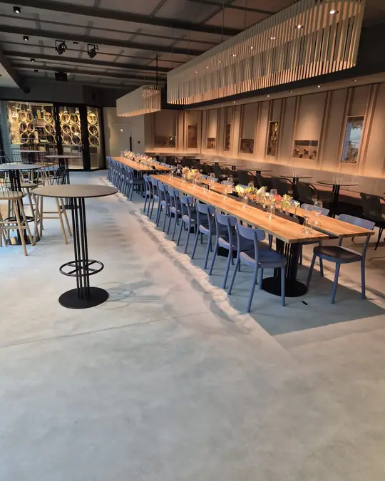
Podlaha velkého sálu
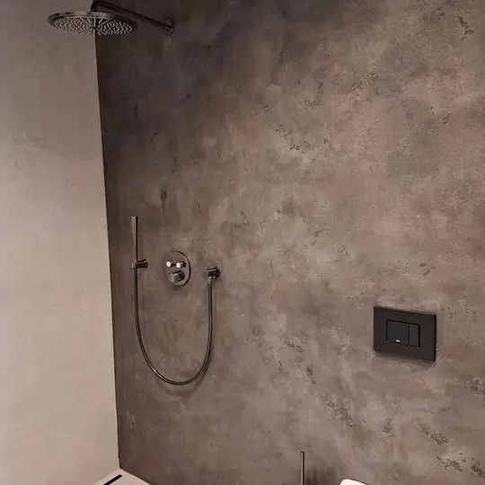
Sprchový kout v tmavé stěrce
Chodba s podlahou v odstínu terakoty
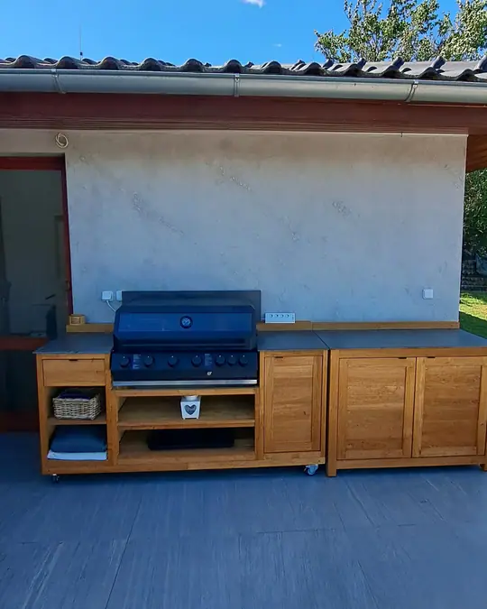
Venkovní kuchyně, stěna ze stěrky
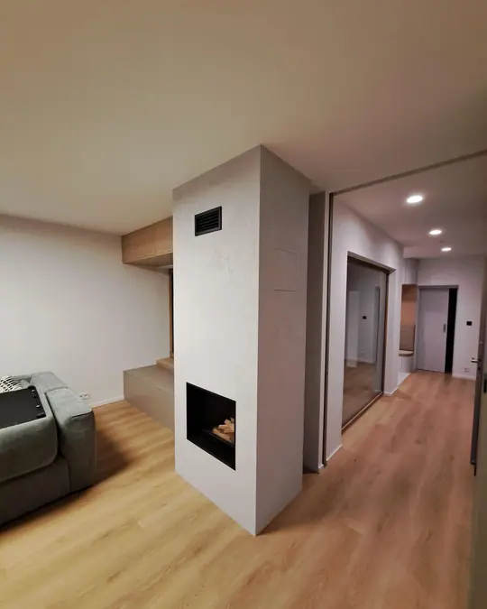
Krb obložený světlou stěrkou
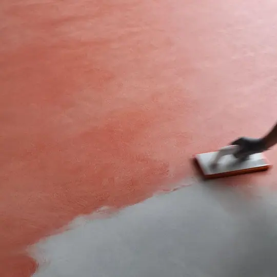
Aplikace podlahy v odstínu terakoty
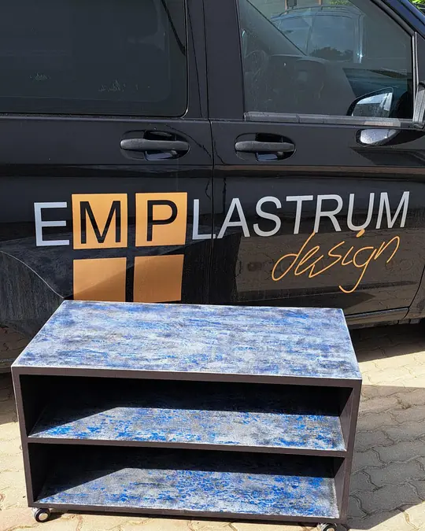
Skříňka s modrým mramorovým efektem
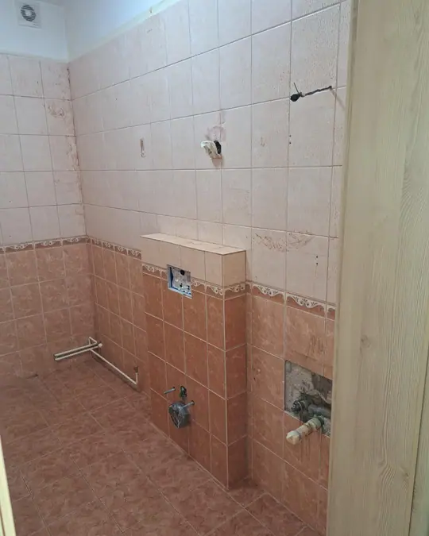
Před – původní obklady
Po – stěrka na stěnách i podlaze
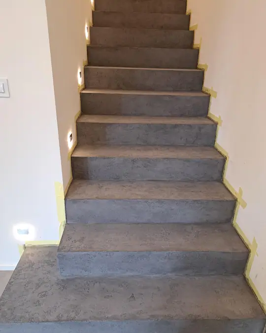
Schodiště ze stěrky
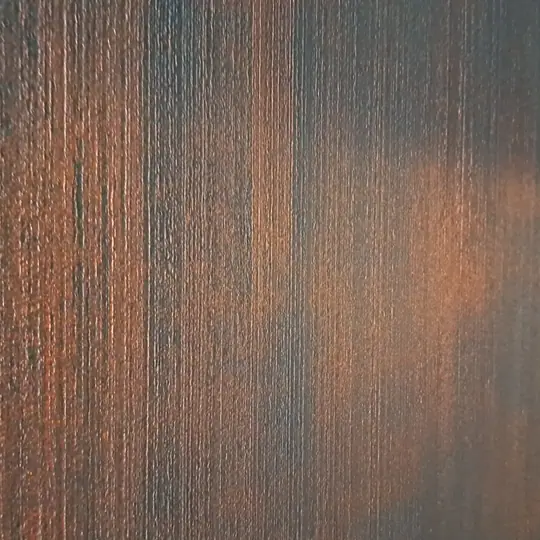
Detail povrchu v měděných tónech
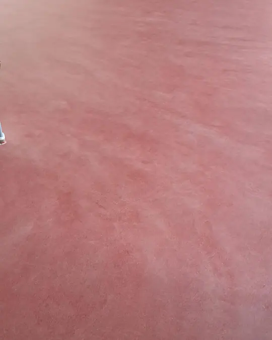
Podlaha v odstínu terakoty
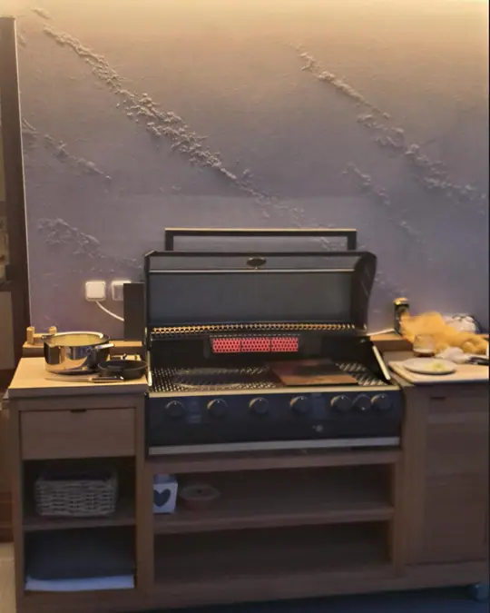
Stěna s jemným reliéfem a osvětlením
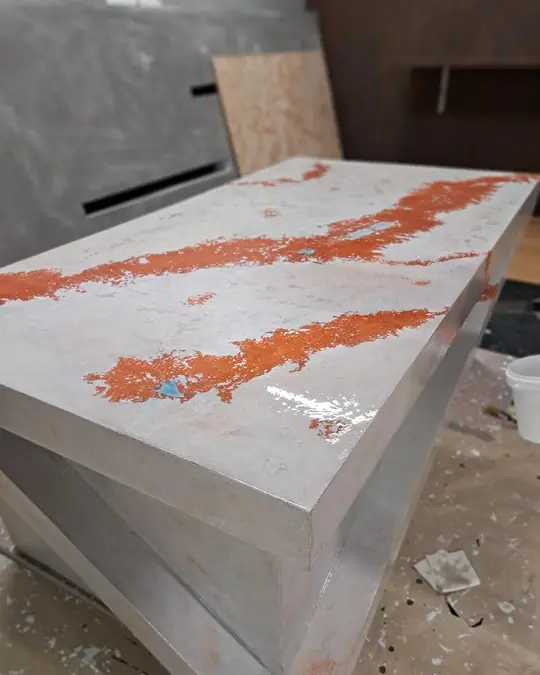
Deska s oranžovou kresbou
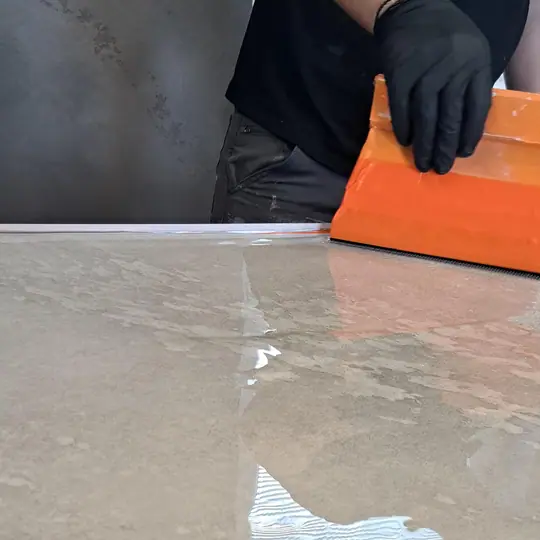
Nanášení lesklé vrstvy
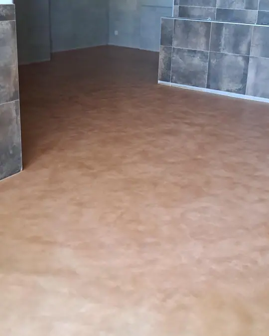
Podlaha v teplém odstínu u tmavého obkladu
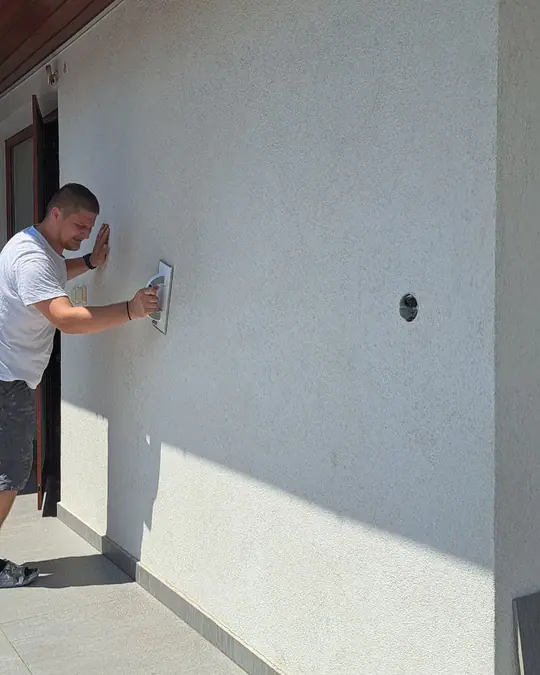
Ruční aplikace stěrky na stěnu
Kliknutím na fotografii ji zvětšíte, mezi snímky se pohybujete šipkami.
Krátké záběry z práce a z hotových povrchů.